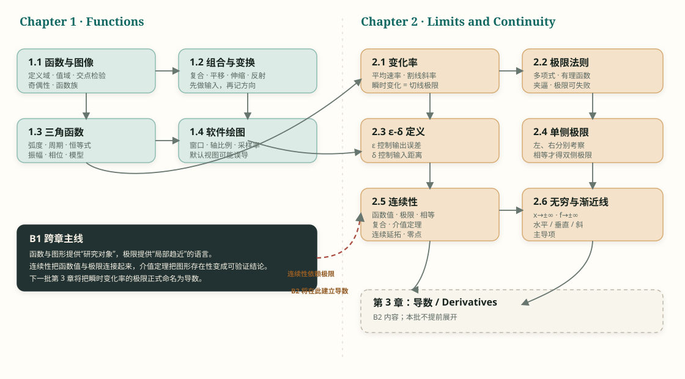

本章主线
第 1 章回答“什么是函数、怎样表示和变换”；第 2 章回答“函数在一点附近怎样变化、何时连续”。两章通过平均变化率与图像联系起来。
本批对齐第 4–5 章金样：每个术语有章节映射，每个定理写明条件，每道练习对应知识点并提供三级答案。第 1 章的图像、函数族与三角函数，为第 2 章的变化率、极限和连续性提供对象与语言。
00 · Batch Brief
第 1 章回答“什么是函数、怎样表示和变换”；第 2 章回答“函数在一点附近怎样变化、何时连续”。两章通过平均变化率与图像联系起来。
沿用中英术语、条件化定理、真实例题位置、原创五类练习、三级答案、20项自测和来源追踪。第 4–5 章文件保持不变。
本批只看到差商和割线斜率极限，不提前把导数定义为第 3 章内容；第 3 章只作为下一批入口显示。
01 · Dependency Map

函数语言给出定义域、值域、图像、复合、变换、周期和模型；软件绘图则提醒“看到的图形”必须与窗口、轴比例和采样条件一起解释。
先从平均变化率与割线进入极限，再区分非正式趋近和 ε-δ 定义；单侧极限连接连续性，介值定理连接连续性与方程零点，无穷极限连接渐近线。
flowchart TB
A["1.1 函数、图像与函数族"] --> B["1.2 复合与图形变换"]
A --> C["1.3 三角函数与模型"]
B --> D["1.4 软件绘图风险"]
C --> D
E["2.1 平均变化率与割线"] --> F["2.2 极限与极限法则"]
F --> G["2.3 ε-δ 定义"]
F --> H["2.4 单侧极限"]
G --> I["2.5 连续性与介值定理"]
H --> I
I --> J["2.6 无穷极限与渐近线"]
A --> E
D --> E
I --> K["第3章导数（不展开）"]
02 · English Terminology
术语按教材实际语境解释。特别区分：函数值与极限、双侧极限与单侧极限、可去间断与跳跃间断、水平渐近线与无穷极限。
| English term | 中文译名 | 简明定义 | 对应节 | 关键公式 / 提示 |
|---|
| 易混项 | 关键区别 | 核对问题 |
|---|---|---|
| domain / range | 定义域是允许输入，值域是实际输出。 | 是在限制 x，还是在描述所有 y？ |
| increasing / even | 增减描述区间变化，奇偶描述关于轴或原点的对称。 | 是在比较两点函数值，还是比较 f(−x)？ |
| average rate / instantaneous rate | 前者是割线斜率，后者是割线斜率极限。 | 是否已经让 h→0？ |
| limit / function value | 极限关注 c 附近，通常不考虑 f(c)；函数值是 c 处的输出。 | 题目问靠近 c 的行为还是点 c 的值？ |
| left/right limit | 只从一个方向趋近；双侧极限要求二者相等。 | x<c 还是 x>c？ |
| removable / jump discontinuity | 前者极限存在但函数值错位；后者左右极限存在却不相等。 | 能否只改一个点使函数连续？ |
| horizontal / vertical asymptote | 水平线由 x→±∞ 控制，垂直线由函数趋于 ±∞ 控制。 | 无穷是变量 x 还是函数值？ |
Chapter Summary
用方程、表格、图形和文字表示同一函数；理解定义域与值域，掌握复合和图形变换，并建立三角函数与周期模型。
函数的关键不是“公式”而是“唯一对应”：每个允许输入只能产生一个输出。定义域决定函数；同一公式换一个定义域就可能换一个函数。图像上，用垂直线检验保证一个输入不对应多个输出。
一条垂直线若能与曲线相交两次或更多，该曲线就不是 y 关于 x 的函数。
不同区间使用不同公式，不代表分成多个函数；定义域需合并各段，并保留端点规则。
函数可以相加、相减、相乘和相除；公共定义域取交集，商还要排除分母为零的点。复合函数则先应用内层函数，再要求内层输出属于外层定义域；图形变换要区分“改动输出”和“改动输入”。
定义域不仅受 g 限制，还要求 g(x) 落在 f 的定义域内。
f(x)+k 上下移；f(x+h) 中正 h 使图像向左移动。
弧度把圆心角表示为弧长与半径之比；之后未另写单位时通常默认弧度。六个基本三角函数的图像、周期与对称性来自单位圆，恒等式则用于化简、求值和后续积分。
|A| 为振幅，|B| 为周期，C 为水平位移，D 为竖直位移。
θ 是边 a、b 的夹角；θ=π/2 时退化为勾股定理。
软件图像是有限采样后连接出来的近似。窗口过宽、轴比例不同、函数有垂直渐近线或快速振荡时，屏幕上的形状可能失真甚至漏掉关键分支。
| 教材例题 | 结论 | 位置 |
|---|---|---|
| Example 1（1.1） | 展示 x²、1/x、√x 等函数的自然定义域与值域。 | 教材 p.20 / PDF p.21 |
| Example 4（1.1） | 分段函数可在整个实数轴上使用三套公式，但整体仍是一个函数。 | 教材 p.23 / PDF p.24 |
| Example 8（1.1） | x² 为偶函数；x 为奇函数；x+1 既非奇也非偶。 | 教材 p.24 / PDF p.25 |
| Example 1（1.2） | √x 与 √(1−x) 的和、积等共同定义域为 [0,1]。 | 教材 p.32 / PDF p.33 |
| Example 2（1.2） | f=√x、g=x+1 时，f∘g 的定义域为 [−1,∞)。 | 教材 p.34 / PDF p.35 |
| Example 3（1.2） | y=x²+1 上移 1；y=(x+3)² 左移 3。 | 教材 p.34–35 / PDF p.35–36 |
| Example 3（1.4） | sin100x 的周期约 0.063，默认宽窗口会漏掉波动。 | 教材 p.49 / PDF p.50 |
若定义域不同，函数不同；极值、单调性和连续性都可能改变。
还要确保 g(x) 属于 f 的定义域。
f(x−3) 是向右移 3，不是向左移 3。
必须对定义域内所有 x 比较 f(−x) 与 f(x) 或 −f(x)。
本章与后续极限默认弧度；计算 sinθ/θ 时尤其不能使用角度制直接套公式。
宽窗口会截断、缩小或漏采关键特征，应同时检查局部和整体。
Chapter Summary
用极限描述函数在一点附近的趋近行为；用 ε-δ 定义把“任意接近”精确化，再用单侧极限、连续性和介值定理连接图像、方程与函数值。
平均变化率对应两点间割线斜率；让第二点沿曲线靠近第一点，割线斜率的极限若存在，就定义该点切线斜率。本批只建立这个极限过程，正式导数定义留到第 3 章。
h≠0；对应割线斜率，描述区间平均变化。
极限不存在时，该点不存在有限切线斜率。
函数在 c 处的极限只研究 c 附近，不依赖它在 c 处是否定义或取何值。极限可能因左右跳跃、无界或振荡而不存在。若各组件极限存在，极限法则把复杂表达式拆成基本极限。
| 规则 / 定理 | 内容 | 使用条件 |
|---|---|---|
| Theorem 1 · Limit Laws | 和差、常数倍、积、商、幂和根可分别取极限 | 相关极限存在；商与根的表达式需有定义 |
| Theorem 2 · Polynomials | 多项式极限可直接代入 | 多项式处处连续 |
| Theorem 3 · Rational Functions | 有理函数在分母非零处可直接代入 | Q(c)≠0 |
| Theorem 4 · Sandwich Theorem | 上下界都趋于 L，被夹函数也趋于 L | 不等式在 c 的邻域内成立 |
ε 是输出允许误差，δ 是对应的输入控制距离。证明极限要“任取 ε→构造 δ→在条件下推出误差”，而不是求解一个固定 δ。
0<|x−c| 明确排除 x=c；条件必须对任意 ε>0 成立。
左、右极限分别只从一个方向接近 c。内点双侧极限存在，当且仅当左右极限存在且相等；在定义域端点，只需相应方向的极限。
用于内点；在边界点只需与定义域方向相符的单侧极限。
θ 必须以弧度测量；常与三角恒等式和夹逼定理联合使用。
连续需要三个环节同时成立：f(c) 有定义、极限存在、极限等于函数值。间断可分为可去、跳跃、无穷和振荡。连续函数对四则运算、复合和某些反函数运算保持连续，并在闭区间上具有介值性质。
端点连续性用对应单侧极限替换双侧极限。
f 必须在整个闭区间 [a,b] 连续；它保证存在性，不直接给出位置。
“x→∞”描述自变量无界增大，“f(x)→∞”描述函数值无界增大，两者都不是实数。有限极限给出水平渐近线，函数值趋于无穷给出垂直渐近线；有理函数可借最高次项或除法得到水平、斜渐近线。
Theorem 12 允许在 x→±∞ 时使用同样的极限法则。
至少一个相应单侧无穷极限成立；分母为零但可约去时不一定是渐近线。
| 教材例题 | 结论 | 位置 |
|---|---|---|
| Example 2（2.1） | 自由落体 y=4.9t² 在 t=1、2 秒的瞬时速度分别趋于 9.8、19.6 m/s。 | 教材 p.57–58 / PDF p.58–59 |
| Example 3（2.1） | y=x² 在 (2,4) 的切线斜率为 4，切线 y=4x−4。 | 教材 p.59 / PDF p.60 |
| Example 1（2.2） | (x²−1)/(x−1) 在 x≠1 时可化简为 x+1，极限为 2。 | 教材 p.63–64 / PDF p.64–65 |
| Example 4（2.2） | 阶梯、1/x、sin(1/x) 分别以跳跃、无界、振荡展示极限不存在。 | 教材 p.65–66 / PDF p.66–67 |
| Example 10（2.5） | 连续多项式 x³−x−1 在 1、2 间由介值定理有根，根约 1.3247。 | 教材 p.97 / PDF p.98 |
| Example 12（2.5） | (x²+x−6)/(x²−4) 在 x=2 可连续延拓，延拓值为 5/4。 | 教材 p.99 / PDF p.100 |
| Example 9（2.6） | (x²−3)/(2x−4) 可写成 x/2+1+1/(2x−4)，斜渐近线 y=x/2+1。 | 教材 p.105–106 / PDF p.106–107 |
平均变化率对应割线；瞬时变化需让区间长度趋于零。
极限只看 c 附近。f(c) 可以未定义、取错值或与极限无关。
ε 是任意给定容限，δ 要据此构造；“存在 δ 使对所有 ε”是错误量词顺序。
内点双侧极限要求左右极限都存在且相等。
若公因子可约去，可能是可去间断；渐近线需要无穷极限证据。
∞ 描述无界行为，不能使用 ∞−∞ 或 0·∞ 的普通算术结论。
05 · Deliberate Practice
先独立作答，再逐层展开提示、关键步骤与完整解析。内部编号仅用于本批次追踪。
06 · Recall & Diagnosis
| 练习编号 / 知识点 | 错误类型 | 应回看的内容 |
|---|---|---|
尚未编辑
07 · Quality Gate
| 检查项 | 结果 | 证据 / 说明 | 缺陷等级 |
|---|---|---|---|
| G1 版本与来源 | 通过 | 封面、版权页、目录和第1–2章边界逐项核对。 | 无 |
| G2 章节覆盖 | 通过 | 1.1–1.4、2.1–2.6全部覆盖；相邻章不展开。 | 无 |
| G3 术语 | 通过 | 术语动态载入；包含定义、章节和公式/例子。 | 无 |
| G4 定理与公式 | 通过 | 定理号与条件逐条核对，关键公式使用KaTeX渲染。 | 无 |
| G5 例题结论 | 通过 | 只保留原创提炼，并标教材页与PDF页。 | 无 |
| G6 练习与答案 | 通过 | 每章15题，五类题型；三级答案与知识点映射完整。 | 无 |
| G7 计算与渲染 | 通过 | 28项代表性计算复算通过；KaTeX错误数为0。 | 无 |
| G8 图表与链接 | 通过 | 章节导航、术语筛选、地图和回链完整。 | 无 |
| G9 网页与打印 | 通过 | 桌面/移动端无横向溢出，批次PDF已完成页面检查。 | 无 |
| G10 版权与版本 | 通过 | 原创概要与练习，不复制整节教材；未混入其他资料。 | 无 |
第1章比金样更依赖图形。已增加垂直线、窗口、轴比例与采样风险专项检查。
第2章的ε-δ量词顺序容易误写。已把 ε 与 δ 的角色单独列为术语和练习。
差商极限已出现，但本批不把导数定义提前混入第2章；第3章仅作为下一批入口。
所有例题同时标注教材页和PDF物理页，避免封面造成的一页偏移。
08 · Source Ledger
| 节 | 教材页 | PDF物理页 | 本章内部标题 |
|---|---|---|---|
| 1.1 | 19–31 | 20–32 | 函数与图像 |
| 1.2 | 32–38 | 33–39 | 函数组合与图形变换 |
| 1.3 | 39–46 | 40–47 | 三角函数 |
| 1.4 | 47–50 | 48–51 | 软件绘图 |
| 2.1 | 56–62 | 57–63 | 变化率与切线 |
| 2.2 | 63–73 | 64–74 | 函数极限与极限法则 |
| 2.3 | 74–82 | 75–83 | 极限的精确定义 |
| 2.4 | 83–89 | 84–90 | 单侧极限 |
| 2.5 | 90–100 | 91–101 | 连续性 |
| 2.6 | 101–113 | 102–114 | 无穷极限与渐近线 |